Imker-Waage (Stockwaage)
Selbst entwickelte Bienenstock-Waage auf ESP32-Basis: Gewicht, Umweltwerte und Energie im Blick – Daten per WLAN (ThingSpeak).
Überblick
Die Waage misst laufend das Gewicht eines Bienenstocks sowie weitere Umweltwerte und überträgt die Daten per WLAN (an ThingSpeak). Als Software kommt ESPHome zum Einsatz. Die Platinen sind ein eigenes Design und bei JLCPCB nachbestellbar.
ℹ️ Hinweis: Diese Doku entstand u. a. während eines Imker-Workshops. Noch offene Stellen sind als „noch zu ergänzen" markiert.
| Eigenschaft | Wert |
|---|---|
| Controller | ESP32 DevKit V4 (zwei Footprint-Varianten möglich) |
| Gewicht | 2× Wägesensoren über 2× HX711 |
| Umwelt | BME280 (Temp./Feuchte/Druck), BMP280 (Temp./Druck), bis 3× DS18B20, Mikrofon, BH1750 (Helligkeit) |
| Energie | INA219 (Spannung & Strom Batterie/Solar) |
| Datenübertragung | WLAN → ThingSpeak |
| Software | ESPHome (eigene Konfiguration) |
| Stromversorgung | Akku/Netzteil 6–40 V, Solarmodul bis 30 W / max. 40 V |
| Platinen | Eigenes Design, nachbestellbar bei JLCPCB |
| Schutz | Nur über Außengehäuse (kein separater Diebstahlschutz) |
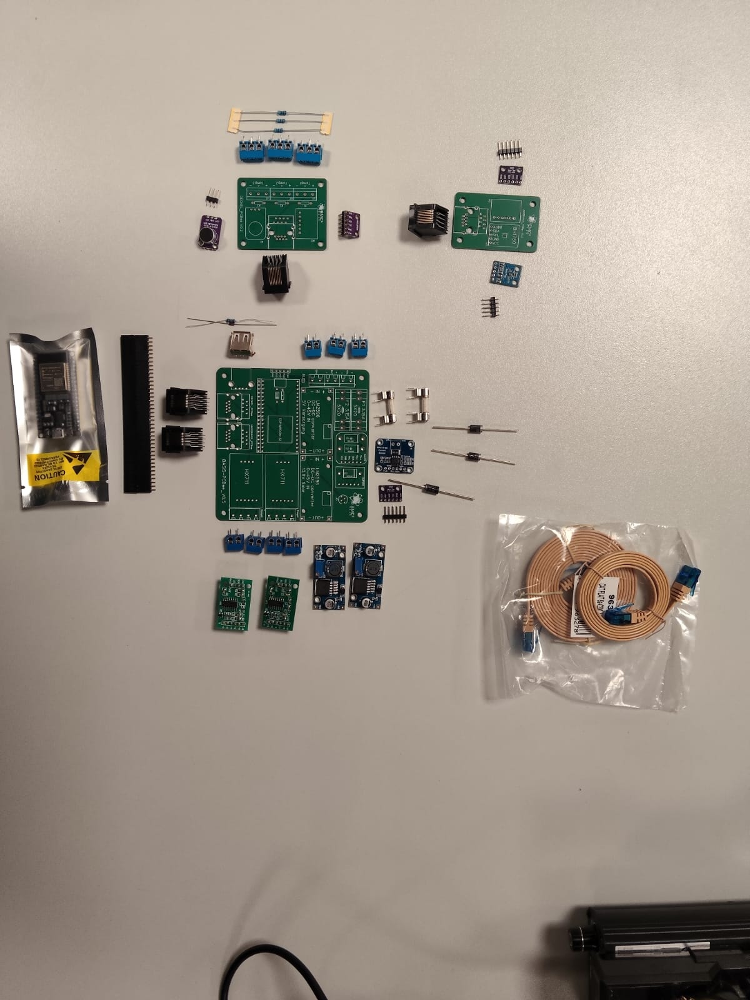
1 · Hardware & Platinen
Herzstück ist ein ESP32, der die Sensoren ausliest und die Daten per WLAN überträgt. Das System besteht aus drei eigenen Platinen, die über ein RJ45-Kabel verbunden sind.
| Platine | Einbauort | Bestückung (Auszug) |
|---|---|---|
Deckel-Platine (DECKEL_PCBee) | Gehäusedeckel | Mikrofon, BME280, 3× DS18B20-Klemmen (Temp1–Temp3), RJ45 |
Hauptplatine (BASIS-PCBee) | Außengehäuse | ESP32, 2× HX711, BMP280, INA219, Netzteile, Stromanschlüsse |
Umgebungsplatine (UMGEBUNGS_PCBee) | noch zu ergänzen | BH1750 (Helligkeit) + weiterer Sensor-Steckplatz, RJ45 |
⚠️ RJ45 ≠ Ethernet: Der RJ45-Stecker wird nur als robuste Steckverbindung genutzt – darüber laufen Stromversorgung und Sensor-/Bussignale, es ist kein Netzwerk.
Deckel-Platine (DECKEL_PCBee)
- Mikrofon (M1) – Stockgeräusche; Modul mit einstellbarer Verstärkung
- BME280 (M2) – Temperatur, Luftfeuchte, Luftdruck (I²C)
- Bis 3× DS18B20 – Temperatur (1-Wire), Klemmen
Temp1,Temp2,Temp3 - RJ45-Buchse – Verbindung zur Hauptplatine
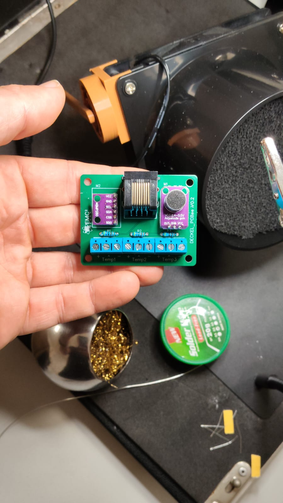
Hauptplatine (BASIS-PCBee)
- ESP32 – Steuerung & WLAN; Platine unterstützt zwei Modul-Breiten (Footprints)
- 2× HX711 – Wägeverstärker für die Gewichtsmessung
- BMP280 – Temperatur/Luftdruck, auf der Rückseite
- INA219 – Spannung & Strom von Batterie und Solar
- 2 Netzteile (LM2596S), Schraubklemmen
SOL/BAT/SRV, Sicherungen F1/F2 (3,15 A), USB-A (5-V-Ausgang)
🔌 ESP32-Footprints: Es wird nur eine der beiden Modul-Varianten (breit/schmal) bestückt – passend zum vorhandenen Modul. Die andere Position bleibt frei.
Wägesensoren & HX711
Die Wägesensoren werden über die HX711 ausgewertet. Die Anschluss-Klemmen heißen
Waage1 und Waage2 und liegen nahe den HX711.
Es funktionieren praktisch alle gängigen Wägezellen – sie sind austauschbar; ein konkretes Modell (Plattformwaage) ist in der BOM verlinkt. Die nötige Belastbarkeit richtet sich nach dem erwarteten Gewicht und danach, ob eine oder zwei Wägezellen verbaut werden.
✅ Welche Wägezelle? Entscheidend ist nicht der genaue Typ, sondern die Kalibrierung nach dem Einbau. Bei günstigen Paketwaagen (eBay) sollte die einzelne Wägezelle mit mindestens 150 kg belastbar sein.
⚠️ Pinbelegung: Die Belegung ist je nach Zelle unterschiedlich und muss durch Ausprobieren ermittelt werden (Rohwerte müssen bei Belastung steigen).
BMP280 auf der Rückseite
ℹ️ Nicht verwechseln: Der BMP280 (Hauptplatine, Rückseite) misst Temperatur/Luftdruck – der BME280 (Deckel) zusätzlich die Luftfeuchte.
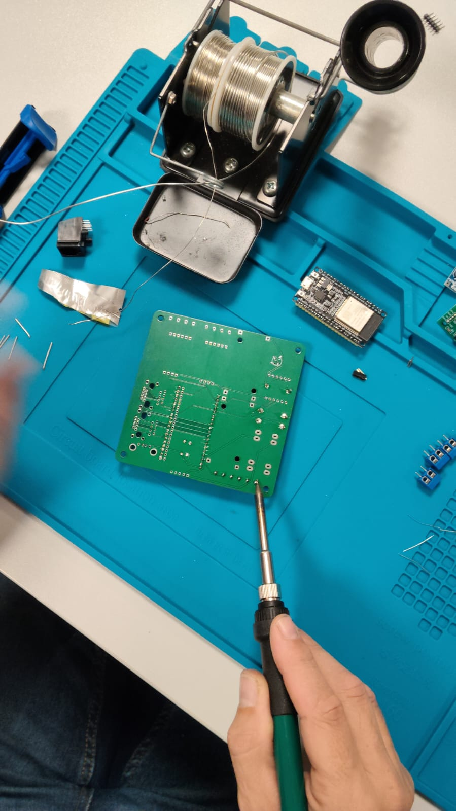
Sicherungen & USB-A
Zwei Feinsicherungen F1/F2 (je 3,15 A, 5×20 mm) begrenzen den Strom und verhindern Folgeschäden z. B. bei defektem Netzteil. Die USB-A-Buchse ist ein reiner 5-V-Ausgang (keine Daten) – praktisch z. B. zur Versorgung eines LTE-Hotspots an Standorten ohne WLAN.
Umgebungsplatine (UMGEBUNGS_PCBee)
- BH1750 – Helligkeit (Lichtstärke, I²C)
- weiterer Sensor-Steckplatz (noch zu ergänzen)
- RJ45-Buchse
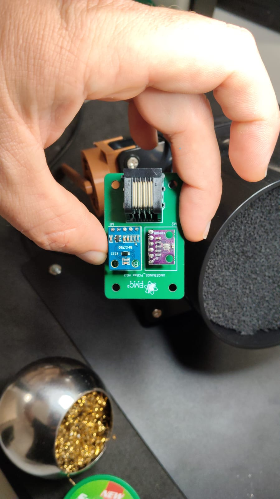
Blockschaltbild
[ Deckel-Platine (DECKEL_PCBee) ]
Mikrofon · BME280 · 3× DS18B20 (Temp1–Temp3)
|
RJ45
|
[ Hauptplatine (BASIS-PCBee) ]
ESP32 · 2× HX711 (Waage1/Waage2) · BMP280 · INA219
| |
Stromversorgung Funk: WLAN
(SOL / BAT / SRV) (WLAN → ThingSpeak)
|
RJ45
|
[ Umgebungsplatine (UMGEBUNGS_PCBee) ]
BH1750 (Helligkeit) · (weiterer Sensor)2 · Platinen-Fertigung (JLCPCB)
Die Platinen können bei JLCPCB nachbestellt werden. Jede Platine (Deckel, Haupt, Umgebung) wird mit ihren eigenen Gerber-Dateien separat bestellt.
📁 Dateien im Repository: Die
Stückliste (BOM, Excel) liegt unter
hardware/bom/, die Gerber-Dateien unter
hardware/gerber/ und die Schaltpläne (PDF) unter
hardware/schaltplan/.
| Platine | Gerber | Schaltplan |
|---|---|---|
| Deckel | Gerber_Deckel-PCBee_V0.2.zip | Schaltplan (PDF) |
| Haupt | Gerber_Main-PCBee_V0.5.zip | Schaltplan (PDF) |
| Umgebung | Gerber_Umgebungs-PCBee.zip | Schaltplan (PDF) |
Beschriftung auf der Platine
✅ Eindeutig gekennzeichnet: Die Platine ist durchgängig bedruckt – es ist klar, welches Bauteil an welche Position gehört, inkl. Einbaurichtung bei gepolten Bauteilen. Im Zweifel mit Schaltplan und BOM abgleichen.
Lötzinn
| Typ | Eigenschaft |
|---|---|
| Bleihaltig | einfacher zu löten, aber gewerblich nicht erlaubt (RoHS) |
| Bleifrei | RoHS-konform, gewerblich vorgeschrieben, etwas anspruchsvoller |
Bauteile mit und ohne Einbaurichtung
- Dioden: gepolt. Schwarzer Ring (Minus/Kathode) muss auf den weißen Ring der Platine zeigen. Es gibt verschiedene Diodentypen – Aufdruck beachten.
- LEDs: gepolt. Abgeschrägte Seite der LED = abgeschrägte Markierung auf der Platine.
- Widerstände: Richtung egal.
- Netzteile (LM2596S):
IN/OUTauf Modul und Platine müssen zusammenpassen.
⚠️ Beim Löten: Keine Lötbrücken zwischen Pins (danach prüfen). Lötdampf nicht einatmen – für Belüftung bzw. Absaugung sorgen.
Löten in der Praxis
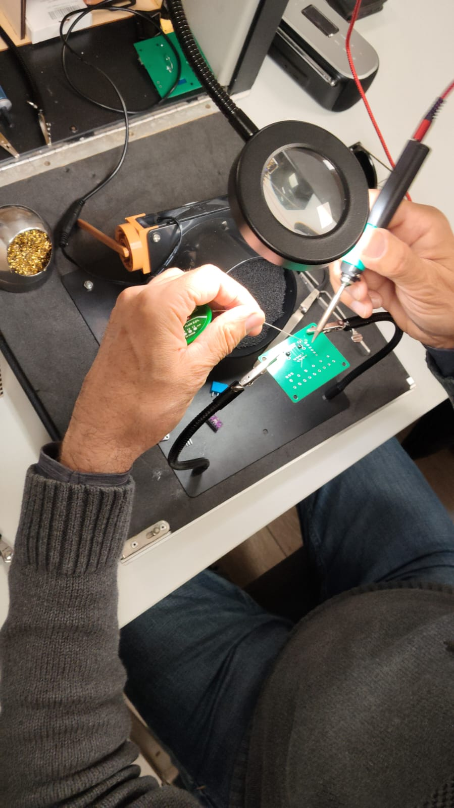
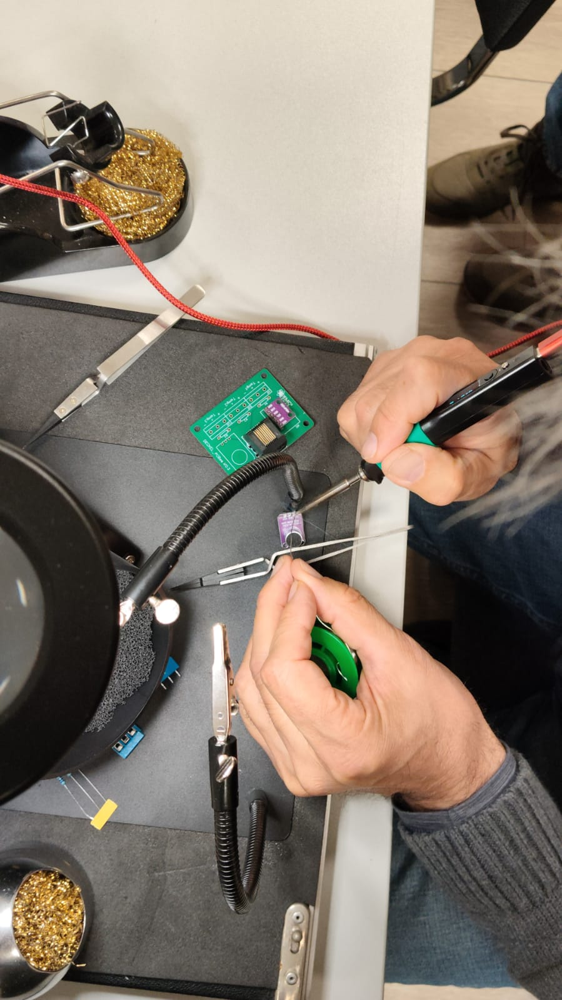
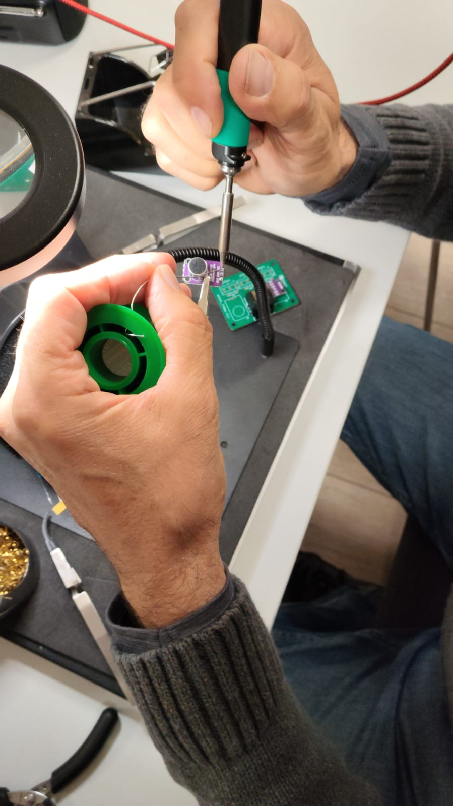
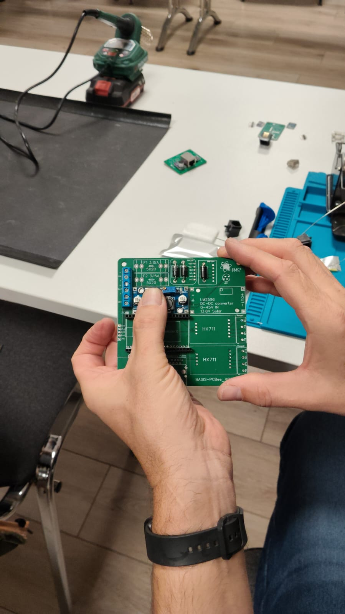
3 · Stromversorgung
Die Waage ist für den Dauerbetrieb im Außenbereich ausgelegt und kann mit Akku, Netzteil und/oder Solar versorgt werden. Alle Anschlüsse sitzen auf der Hauptplatine.
| Quelle | Spannung / Leistung |
|---|---|
| Externer Akku | 6–40 V |
| Netzteil | 6–40 V |
| Solarmodul | bis 30 W, max. 40 V |
Netzteile (DC-DC LM2596S)
Zwei einstellbare Abwärtswandler: ein Laderegler (rechtes Netzteil,
nur bei Solar nötig) und die Versorgung für den Rest der Platine.
Beide über Stiftleisten angelötet, IN/OUT beachten.
🛑 Spannungen VOR dem ESP32-Einbau einstellen! Batteriespannung 14,3 V und 5-V-Versorgung auf genau 5,0 V einstellen und messen. Zu hohe Spannung kann den Controller zerstören.
Erstes Bestromen & Spannungen einstellen
- Spannung anlegen an
SOL(Solar +/−), zum Einstellen 16–40 V (z. B. Werkzeugakku). Polung beachten. Ohne Solarladeregler reichen auch 6–40 V. - Messheader unter dem ESP32 nutzen:
Vsol,Vbat,3V3,5V0,GND. GND = Minus (schwarz). - Batteriespannung 14,3 V am rechten Netzteil-Poti einstellen (rechtsrum höher, mehrere Umdrehungen) – nur bei Solar.
- 5-V-Versorgung auf genau 5,0 V einstellen.
- 5-V-Lötbrücke schließen – erst nachdem die Spannungen stimmen.
- ESP32 aufstecken und am Messpunkt
3V3die 3,3 V prüfen.
ℹ️ Warum 16–40 V zum Einstellen? Im Betrieb genügen 6–40 V. Nur wenn der Solarladeregler bestückt ist, wird am Solar-Eingang eine höhere Mindestspannung (ab 16 V) benötigt, damit der Laderegler die 14,3 V sicher ausregelt. Ohne Solarladeregler reichen auch hier 6–40 V.
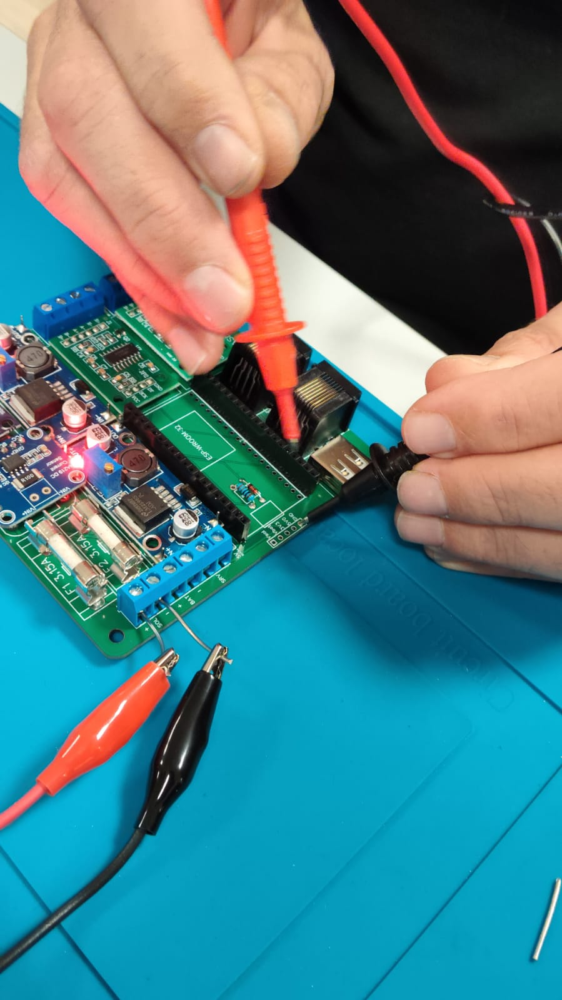
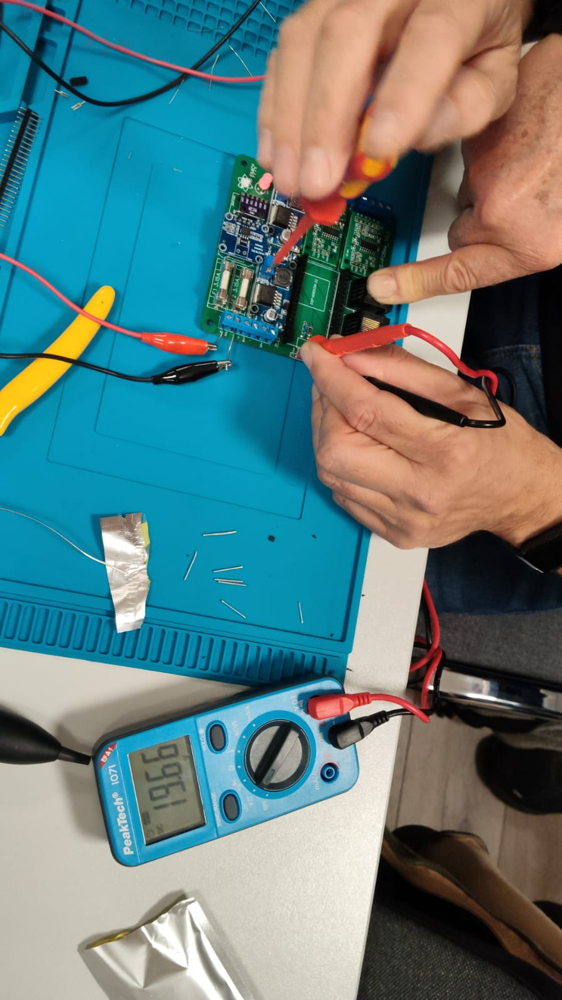
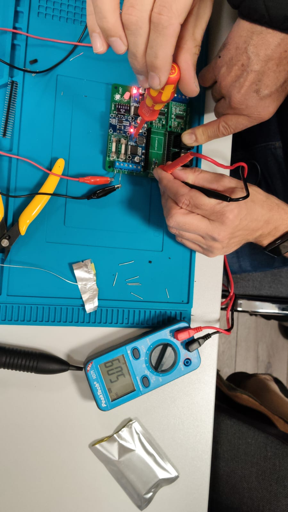
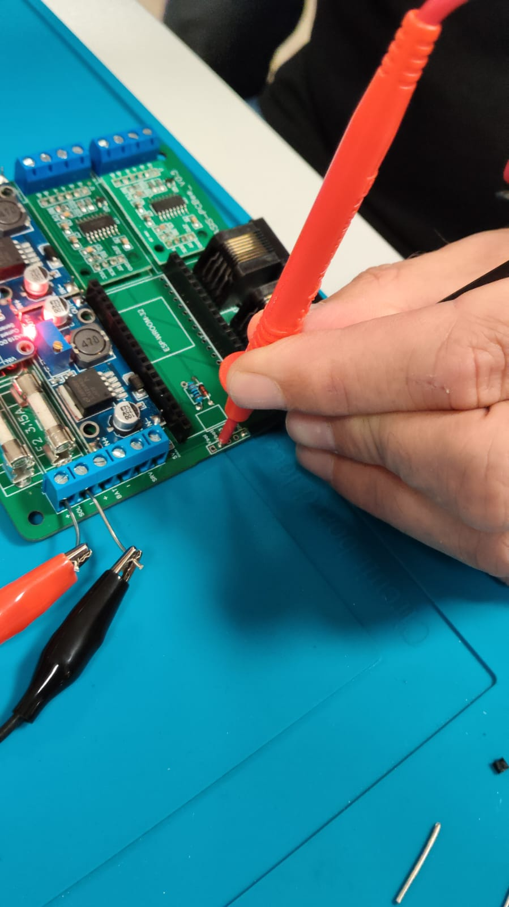
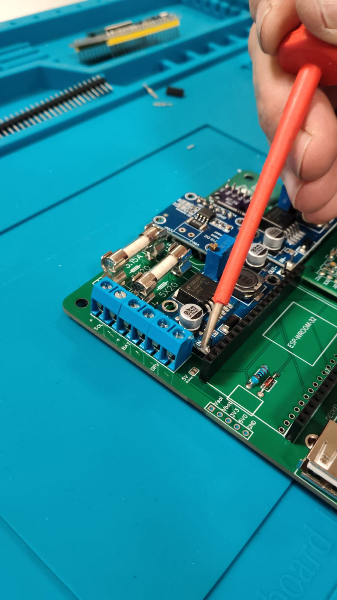
Anschlüsse & Schutz
| Aufdruck | Klemme | Anschluss für |
|---|---|---|
SOL | Solar | Solarmodul (bis 30 W / max. 40 V) |
BAT | Batterie | Akku / Batterie (bzw. Netzteil, 6–40 V) |
SRV | Wartungsschalter | stromlos Schalten bei Wartung |
Überwachung über den INA219 (Batterie-/Solarspannung und Strom). Zwei Sicherungen F1/F2 (3,15 A) begrenzen den Strom.
4 · Software (ESPHome)
Die Firmware basiert auf ESPHome und lässt sich per OTA aktualisieren. Sie liest alle Sensoren aus und sendet die Daten per WLAN an ThingSpeak.
📦 Software in diesem Repository: Die ESPHome-Konfiguration
liegt im Ordner software/ – Haupt-Datei
smarterBienenstock.yaml (plus fft_include.h und
arduinoFFT.h für die Frequenzanalyse des Mikrofons). Board:
az-delivery-devkit-v4, Gerätename smartebeute.
Flashen & Erstkonfiguration
⚠️ Richtige Buchse: Geflasht wird über die USB-Buchse am ESP32-DevKit – nicht über die USB-A-Buchse der Platine (die führt nur 5 V).
Variante A: Direkt im Browser flashen (ohne Installation)
Die Firmware wird automatisch gebaut und hier bereitgestellt. Zum Flashen genügt ein Browser mit Web Serial (Chrome oder Edge am Desktop) – es muss nichts installiert werden.
- ESP32-DevKit per USB-Kabel mit dem Rechner verbinden.
- Oben auf „Imker-Waage flashen" klicken und den seriellen Port auswählen.
- Nach dem Flashen WLAN direkt im Dialog einrichten (oder über den Hotspot, siehe unten).
Variante B: Selbst kompilieren (ESPHome)
- Rechner (Browser mit Web Serial, z. B. Chrome/Edge) per USB mit dem ESP32-DevKit verbinden.
software/smarterBienenstock.yamlmit ESPHome kompilieren und flashen (CLI, Add-on oder Web Installer).
ℹ️ Cloud-Build: Die Binary wird per GitHub Action
(esphome/build-action) automatisch in der Cloud gebaut – auch dafür ist
keine lokale ESPHome-Installation nötig.
Erstkonfiguration (WLAN-Hotspot)
- Nach dem Flashen startet die Waage einen WLAN-Hotspot
smartebeute(ohne Passwort). - Mit dem Hotspot verbinden → im Portal das eigene WLAN auswählen und Zugangsdaten eingeben.
- Danach ist die Waage im eigenen Netz erreichbar unter http://smartebeute.local (OTA-Updates möglich).
Daten an ThingSpeak
Die Messwerte gehen an ThingSpeak (kostenloses Konto, 4 Channels).
- Konto anlegen und zwei Channels erstellen: einen für die Beute (Gewicht), einen für die Umgebungswerte.
- Von beiden Channels den Write-Key notieren.
- Die Write-Keys in der smartebeute-Weboberfläche eintragen (Felder
WriteKey Beute/WriteKey Umgebung).
ℹ️ Kein Speichern-Knopf: Die Write-Keys sind sofort nach dem Einfügen gespeichert.
| Feld | Channel „Beute" | Channel „Umgebung" |
|---|---|---|
| field1 | Gewicht | Helligkeit |
| field2 | Frequenz (Mikrofon-FFT) | Außentemperatur |
| field3 | Temperatur innen | Außendruck |
| field4 | Luftfeuchte innen | – |
| field5 | Temperatur Brut | Busspannung (INA219) |
| field6 | Temperatur Honig | Leistung (INA219) |
| field7 | – | Temperatur Platine |
Wägezelle anschließen & Kalibrierung
Die Wägezelle hat 4 Kabel → Klemmen Waage1/Waage2
(nahe HX711). Die richtige Belegung durch Ausprobieren finden:
✅ Richtig angeschlossen, wenn die Rohwerte bei Belastung steigen. Hier wird noch kein korrektes Gewicht angezeigt – das kommt erst mit der Kalibrierung.
⚠️ Farben variieren: Die Farbcodierung der Wägezellen ist nicht einheitlich und unterscheidet sich oft je Hersteller. Immer per steigenden Rohwerten bestätigen.
Beispiel einer getesteten Zelle (von oben nach unten, beginnend an der LED) – nur für diese eine Zelle, kein allgemeiner Standard:
| Reihenfolge (an der LED beginnend) | Kabelfarbe |
|---|---|
| 1 (oben) | Rot |
| 2 | Schwarz |
| 3 | Weiß |
| 4 (unten) | Blau |
Kalibrierung in der Weboberfläche über zwei Referenzpunkte:
- Ohne Last den Button „Waage1 setzte 0kg" drücken.
- 10 kg (bekanntes Gewicht) auflegen und „Waage1 setzte 10kg" drücken.
- Der Sensor „Waage1 Gewicht" rechnet daraus um – danach stimmt das Gewicht (Werte werden dauerhaft gespeichert).
5 · Montage & Betrieb
Inbetriebnahme (Reihenfolge)
- Platinen bestücken – ESP32 noch nicht einsetzen.
- Spannungen einstellen (14,3 V / 5,0 V), dann 5-V-Lötbrücke schließen.
- ESP32 aufstecken, 3,3 V prüfen.
- ESP32 flashen (ESP Web Flasher).
- Mit Hotspot
smartebeuteverbinden, WLAN + ThingSpeak einrichten. - Platinen per RJ45 verbinden, Wägezelle an Waage1/Waage2 (Belegung ausprobieren).
- Waage kalibrieren (0 kg / 10 kg).
- Datenübertragung prüfen, erste Messwerte kontrollieren.
Wetterschutz, Diebstahl & Verschmutzung
⚠️ Häufige Imker-Frage: Die Elektronik hat keinen eigenen Schutz gegen Diebstahl oder Verschmutzung. Der Schutz erfolgt ausschließlich über das Außengehäuse (Witterungsschutz). Ein Diebstahlschutz (Alarm/GPS) müsste separat ergänzt werden.
- Gehäuse so montieren, dass kein Spritz-/Stauwasser eindringt; Kabeldurchführungen nach unten und abgedichtet.
- RJ45-Verbindung und Klemmen vor Feuchtigkeit schützen.
- Regelmäßig auf Verschmutzung (Sensoren, Solarmodul) und festen Sitz prüfen.
Wartung
- Akku-/Ladezustand im Blick behalten (besonders Solar im Winter).
- Sensoren und Solarmodul sauber halten.
- Nach Eingriffen am Stock prüfen, ob die Waage korrekt misst (ggf. neu kalibrieren).
Status / noch zu klären
- Umgebungsplatine: zweiter Sensor-Steckplatz (neben BH1750) und Einbauort
- Gehäuse/Schutzart
Haftungsausschluss
🛑 Nachbau auf eigene Gefahr: Diese Dokumentation wird ohne Gewähr bereitgestellt. Der EmC² Saar e.V. übernimmt keine Haftung für Schäden, die aus dem Nachbau, dem Zusammenbau oder dem Betrieb der Imker-Waage entstehen – insbesondere nicht für Sach-, Personen- oder Folgeschäden (z. B. an Elektronik, Akkus, Bienenvölkern oder durch Arbeiten an der Stromversorgung).
Der Nachbau und Betrieb erfolgt vollständig auf eigene Verantwortung und eigenes Risiko. Für den sach- und fachgerechten Aufbau, die Einhaltung der geltenden Vorschriften (z. B. im Umgang mit Strom und Lötarbeiten) sowie die Sicherheit der verwendeten Komponenten ist allein die nachbauende Person verantwortlich.